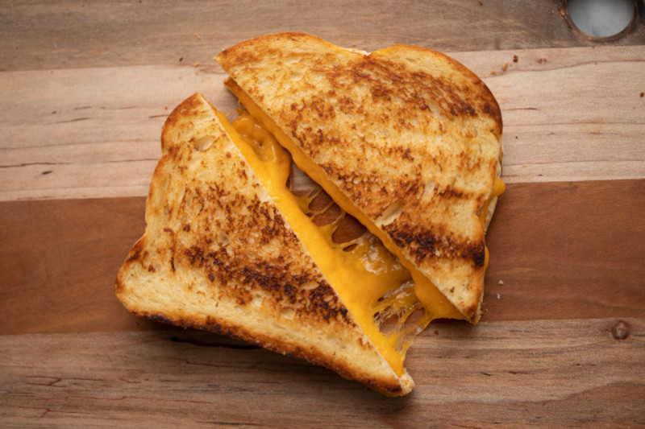

Grilled Cheese Sandwich

The grilled cheese is a timeless American sandwich: gooey American cheese inbetween two slices of white bread.It takes only minutes to make and can be customized any which way you like, such as adding ingredients like bacon or using a different cheese.
Ingredients
- 2 slices white bread
- 1 1/2 tbsp butter, divided
- 1 slice American cheese, or whichever you prefer
Steps
- Preheat pan over medium heat. Generously butter one side of a slice of bread.
- Place bread butter-side-down onto pan and add the slice of cheese.
- Butter the second slice of bread on one side and place butter-side-up on top of sandwich.
- Grill until lightly browned and flip over; continue grilling until cheese is melted.
- Enjoy!
Home